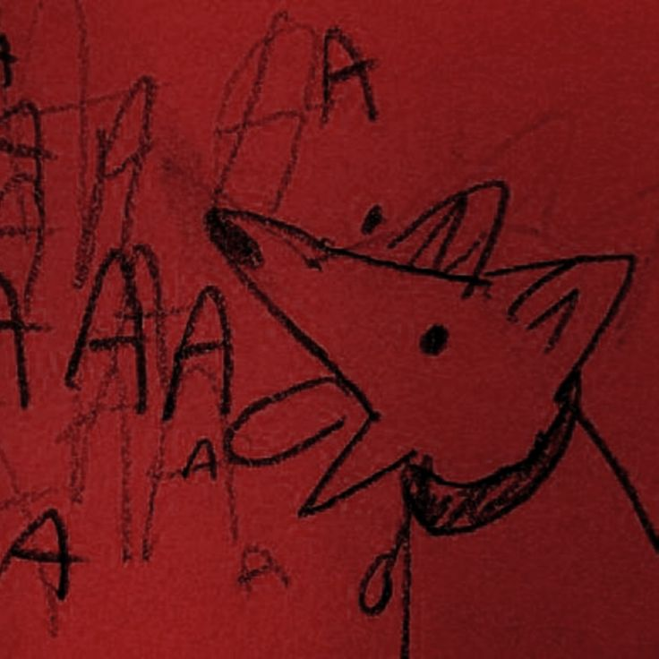
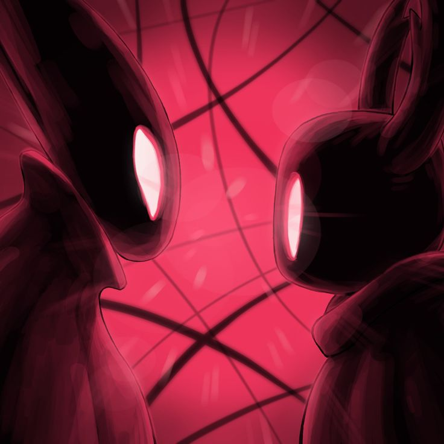
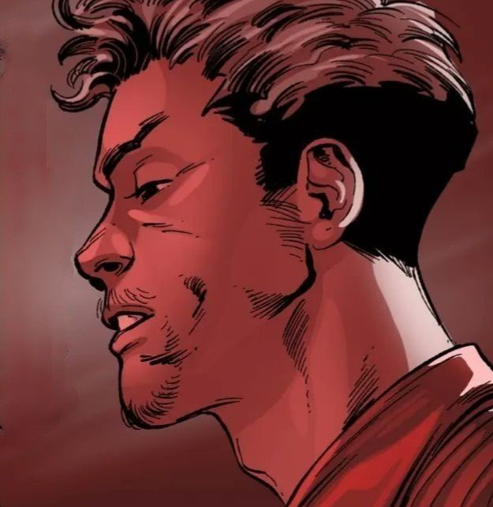
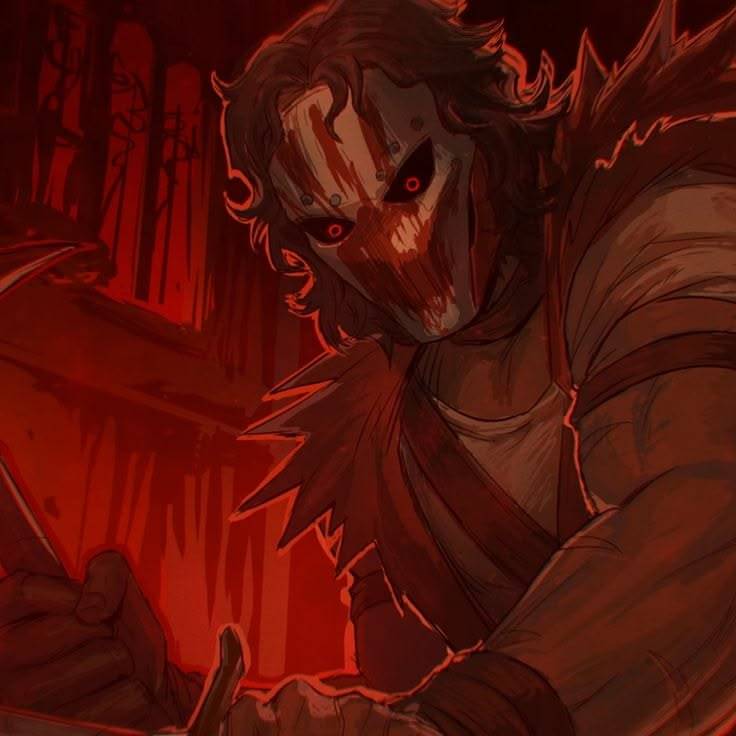

Saudações, agente Lucas. Hoje ambos os mundos se alinham em harmonia para testemunhar um evento grandioso, a data de nascimento de alguém magnífico, incrível, lindãodopaidarcheiro, e de muita influência no outro lado e em nossos corações: o seu aniversário, e o motivo da minha mais genuína comemoração.
Sentiu saudade das minhas besteiras? Eu espero que sim, imagina que a minha ausência não te deixou nem um pouquinho triste? Não pode, logo eu o protagonista... Mas não por hoje, porque hoje VOCÊ é o centro das atenções, e eu estou mais do que feliz em cooperar nisso.


Hoje, no dia 29/09/2026, eusinho te desejo de novo um feliz aniversário, e espero de coração que eu tenha terminado esse site q tempo, se não toda minha correria foi perdida e você tem todo o direito de me tacar tomate.
Ainda lembro do nosso tempo juntos, esses momentos foram muito importantes para mim perceber o quão bom é ter um amigo assim na vida, desde o just dance que botava suas costas em risco até os tapas de massa que eu já levei são memórias muito queridas, carrego elas comigo sempre que tenho que pensar em formas de descrever sua amizade.


Eu peço desculpas por não estar tão presente ultimamente, essa distância também não me anima nem um pouco. Eu sinto saudade de conversar com vocês, besteirar com vocês, de vocês. Sempre te achei um amigo muito engraçado que vale a pena ter por perto, você nunca me deixou mal ou na mão e isso já é prova o suficiente de que é um ótimo amigo e pessoa.
Te desejo ainda uma vida maravilhosa, muitas bençãos, muita alegria, e que nós possamos nós reencontrar de novo (uma grande dificuldade, mesmo você morando quase na rua de casa). Quando você estiver lendo isso aqui, eu espero já ter conversado contigo pelo menos um pouquinho, e que goste desse meu pequeno presente, porque você merece isso e muito mais.